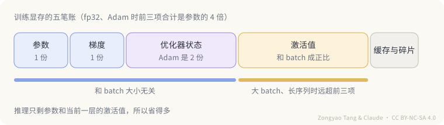

线索是：张量其实是两样东西，一块存储和一张说明 → 很多操作只改说明，所以不拷贝数据 → 说明里还有三个属性，决定了算子走哪条实现 → 存储从哪来？在 GPU 上，PyTorch 有自己的一套分配办法 → 最后把训练时的显存分成五笔账。这一单元还附了一篇“读源码的预备知识”，后面每篇源码导读都以它为基础。
第 2 部分 · PyTorch 执行栈2.1 张量与内存
这一单元回答一个张量在内存里到底是什么？为什么有的操作不拷贝数据，有的会？
第 2 部分的起点。承接 0.1 的“框架层”：从这里开始，一层层看 PyTorch 怎样把 Python 变成 GPU 上的计算。
- 张量 = 一块存储，加上一张说明“怎么看它”的表
- view、转置、切片只改说明，不拷贝数据
- 说明里还有三个属性：设备、数据类型、布局，它们决定算子走哪条实现
- PyTorch 自己缓存显存：reserved 是它向驱动要来的，allocated 是张量实际在用的
- 训练时的显存是五笔账：参数、梯度、优化器状态、激活值、缓存与碎片
讲解
1张量 = 一块存储，加上一张说明“怎么看它”的表
张量由两部分组成。存储（storage）是一段连续的内存，里面只是一维排开的数。另一部分是元数据：形状、步长（stride）、起始偏移，它说明怎样把这一维的数“看成”一个多维数组。
创建一个 2 行 3 列的张量：
x = torch.arange(6).reshape(2, 3) # [[0, 1, 2], # [3, 4, 5]]
存储里是
0 1 2 3 4 5，一维的，没有“行”和“列”的概念。元数据有三项：
- 形状（size）：
(2, 3)。 - 步长（stride）：
(3, 1)。意思是：行号加 1，在存储里往后跳 3 个；列号加 1，往后跳 1 个。 - 偏移（storage offset）：
0。从存储的第几个数开始算。
要找第 i 行第 j 列的元素，位置 = 偏移 + i × 3 + j × 1。比如
x[1, 2]在位置 0 + 3 + 2 = 5，值是 5。可以直接看这些信息：
x.shape, x.stride(), x.storage_offset() # (2, 3), (3, 1), 0
为什么要这样设计。 把“数放在哪”和“怎么解读”分开，带来两个好处：
- 多个张量可以共用同一块存储，只是解读方式不同（下一节）。
- 存储可以放在任何地方：主内存、显存，甚至别的设备。元数据始终在主内存里，由 CPU 上的代码处理。所以对一个 GPU 上的张量查形状、改形状，都不需要和 GPU 打交道。
在源码里，这两部分分别是
TensorImpl（元数据，外加一个指向存储的指针）和StorageImpl（那块内存，以及它是谁分配的、在哪个设备上）。Python 里的一个torch.Tensor对象，背后就是一个TensorImpl。预备：读 PyTorch 的 C++ 源码要认得的几样东西
如果你学的是较早的 C++：PyTorch 的源码用的是现代 C++，但读懂主干只需要认得下面几样。后面每篇源码导读都以这里为基础。
一、仓库的五个目录。
torch/：Python 代码。你平时import torch用到的模块（torch.nn、torch.optim、torch.utils.data）都在这里，是纯 Python。torch/csrc/：Python 和 C++ 的接口层，以及用 C++ 写的框架逻辑。autograd 引擎（autograd/）、分布式（distributed/）在这里。aten/src/ATen/：张量库。所有算子的实现在native/下，其中native/cuda/是 CUDA 版本。c10/：最底层的核心。TensorImpl、StorageImpl、dispatcher 的基础设施、显存分配器（c10/cuda/）在这里。tools/：代码生成脚本，以及它们读取的配置表。
二、很多代码是生成的，仓库里搜不到。 PyTorch 有两千多个算子，每个算子的 Python 接口、autograd 包装、分发入口都是按固定模式写的。这些重复的代码不是人写的，而是构建时由脚本根据两张表生成：
aten/src/ATen/native/native_functions.yaml：每个算子的签名和它有哪些实现（2.3）。tools/autograd/derivatives.yaml：每个算子的导数公式（2.2）。
所以在源码里搜某个函数名搜不到时，它多半是生成的。去看这两张表，或者去构建目录下的
generated/文件夹里找。三、智能指针：谁负责释放内存。 早年的写法是手写
new和delete。现在的做法是让一个对象来管理指针，没有人再引用时自动释放：std::shared_ptr<T>：引用计数的指针，标准库提供。c10::intrusive_ptr<T>：PyTorch 自己的版本，计数存在对象内部。Tensor类里其实就只有一个intrusive_ptr<TensorImpl>，所以拷贝一个Tensor很便宜，只是引用计数加一。std::unique_ptr<T>：独占的指针，不能拷贝，只能转移。
这解释了一件事：一块显存什么时候释放？当指向它的最后一个张量（包括视图，包括 autograd 保存的副本）消失的时候。
四、RAII 和 guard：用对象的生命周期来开关状态。 源码里常见这样的写法：
{ pybind11::gil_scoped_release no_gil; // 构造时释放 GIL ... 做计算 ... } // 离开大括号时自动重新拿回 GIL名字里带
Guard、Scope、Mode的对象多半是这种用法：构造时改变某个状态，析构时恢复。torch.no_grad()在 C++ 里对应的就是一个 guard。读到它时只需要问：它在这段代码期间打开或关闭了什么。五、模板和宏：先看懂它展开成什么。 你会遇到大段的模板和宏，比如注册算子实现的
TORCH_LIBRARY_IMPL、定义错误检查的TORCH_CHECK。不必弄懂它们的实现，知道它们的效果就行：前者往 dispatcher 的表里填一格，后者条件不满足就抛异常（Python 里看到的报错信息就来自这里，所以拿报错信息在源码里搜，常常能直接定位）。六、几个命名空间。
c10::是核心，at::是张量库（at::Tensor、at::add），torch::是上层，torch::autograd::是自动求导。看到at::add(a, b)，它等价于 Python 里的torch.add(a, b)。怎么开始读。 不要从头读。带着一个具体的问题（“这个报错是哪来的”“这个参数实际影响什么”），用报错信息或参数名在仓库里搜，找到一处后顺着调用关系往上或往下走几步。后面的导读给的就是这样的路线。
打个比方像一卷胶片和放映说明：胶片是一长条画面（存储）；说明上写着“每行 4 格、共 3 行、从第 2 格开始放”（元数据）。同一卷胶片，换一张说明就是另一种画面。
所以很多看起来在“变换数据”的操作，其实只改了说明，一个字节都没动。分清“改说明”和“动数据”，是理解 PyTorch 性能和显存的第一步。
- 形状（size）：
- 存储和说明分开之后，立刻得到一类不需要搬数据的操作。
2view、转置、切片只改说明，不拷贝数据
切片、转置、reshape（多数情况）、expand 这些操作，产生的新张量和原张量共用同一块存储，只是形状、步长、偏移不同。这样的张量叫视图（view）。它们几乎不花时间、不占额外内存；但改其中一个的内容，另一个也会跟着变。
接着上一节的
x（形状(2, 3)，步长(3, 1)）。切片：
x[1]取第 2 行。新张量的形状是(3,)，步长(1,)，偏移3。存储还是原来那一块，只是从第 3 个数开始看。转置：
x.t()把行列对调。新张量的形状是(3, 2)，步长是(1, 3)，就是把原来的形状和步长各自调换了顺序。存储一个数都没动。验证一下：新张量的[2, 1]在位置 2 × 1 + 1 × 3 = 5，值是 5，正是原来的x[1, 2]。
转置只是把形状和步长调换了顺序，存储一个数都没动 连续（contiguous）是什么意思。 按“最后一维变化最快”的顺序依次读一个张量的所有元素，如果在存储里也正好是从前往后挨着读，就说它是连续的。原来的
x是连续的；转置之后，逻辑上的顺序是 0 3 1 4 2 5，在存储里要来回跳，就不连续了。不连续带来两件事：
- 有些操作要求连续。
view只改元数据，如果新的形状没法只靠改步长来表达，就会报错，并提示你改用reshape。reshape的做法是：能只改元数据就只改；不能，就悄悄拷贝一份。 - 访问模式变差。对不连续的张量做运算，读内存时是跳着读的，对缓存不友好（0.3）；在 GPU 上，kernel 的访存也可能因此无法合并（3.4）。所以有些操作会先在内部调用
.contiguous()拷贝出一份连续的，这次拷贝才是真正花时间和内存的地方。
哪些是视图，哪些会拷贝。
- 视图：切片和索引（用整数或切片）、
view、transpose/permute、expand、squeeze/unsqueeze、detach。 - 拷贝：
clone、contiguous（原来不连续时）、用张量或布尔掩码做索引、.to()换设备或换类型、大多数运算的结果。 - 看情况：
reshape、flatten。
视图和显存。 视图持有对整块存储的引用。从一个 10 GB 的张量上切下一小片留着，那 10 GB 就一直不能释放。想只留下那一小片，要对它
clone()，再放掉原来的张量。打个比方像同一份表格的两种筛选视图：按行看和按列看，看到的排列不同，底下是同一份数据。在一个视图里改了某个格子，另一个视图里也变了。
所以这些操作是免费的，可以放心用。要留意的是它的两个后果：转置之后数据在内存里不再“按顺序”排列，有些操作会因此变慢或报错；视图会让一大块存储迟迟不能释放。
- 有些操作要求连续。
- 元数据里还有几项，和“怎么看存储”无关，而是决定“谁来算”。
3说明里还有三个属性：设备、数据类型、布局，它们决定算子走哪条实现
除了形状和步长，每个张量还带着三个属性：设备（CPU 还是哪一张 GPU）、数据类型（fp32、bf16、int64……）、布局（普通的稠密张量，还是稀疏等特殊格式）。同一个 torch.add，针对这三者的不同组合有不同的底层实现，PyTorch 根据输入张量的属性来挑。
设备（device）。 存储在哪：
cpu，或者cuda:0、cuda:1。它决定了实现用 CPU 的代码还是 CUDA 的 kernel。参与同一次运算的张量必须在同一个设备上，否则报错。PyTorch 不会替你悄悄搬数据，因为跨设备的拷贝很贵（0.1 的第 3 步），它要你明确地写出来。数据类型（dtype）。 每个数占几个字节、怎么解释。它决定实现里用哪种数值运算。两个不同类型的张量相加时，PyTorch 会按规则把结果提升到更“宽”的那个类型。混合精度训练（2.6）做的事，就是在算子调用的路上临时把输入转换成更低精度的类型。
布局（layout）。 绝大多数张量是稠密的（strided），就是前两节讲的“存储加步长”。稀疏张量等特殊格式用别的方式存数据，有各自的一套实现。
它们怎样参与路由。 每个张量内部还有一个“分发键的集合”，由这三个属性，加上“是否需要求梯度”等状态决定。调用一个算子时，PyTorch 把所有输入张量的集合合并起来，从中找出优先级最高的一项，据此决定下一步交给谁。比如一个需要求梯度的 CUDA 张量：
- 先交给“自动求导”这一层，记下反向要用的信息（2.2）；
- 再交给“CUDA 后端”这一层，执行真正的计算。
这个过程 2.3 会展开。这里先记住一点：一次算子调用走哪条路，是由输入张量的属性在运行时决定的，不是写代码时决定的。这是 PyTorch“动态”的含义之一，也是每次调用都有一点固定开销的原因之一。
打个比方像一个翻译机构接到“翻译这份文件”的委托：先看是什么语言、什么领域、纸质还是电子版，再转给对应的译员。委托的名字一样，干活的人不同。
所以张量的属性不只是“标签”，它直接参与了每一次算子调用的路由。这个路由机制叫 dispatcher，是 2.3 的主角。
- 存储总要有地方放。在 GPU 上，这块内存从哪来、什么时候还，PyTorch 有自己的一套办法。
4PyTorch 自己缓存显存：reserved 是它向驱动要来的，allocated 是张量实际在用的
向 CUDA 驱动申请和归还显存都很慢。所以 PyTorch 在中间加了一个缓存分配器：张量释放时，显存不还给驱动，而是留在自己的池子里，下次分配直接从池子里切。于是有两个数：allocated 是当前所有张量占用的；reserved 是池子的总大小。nvidia-smi 看到的接近后者。
为什么要缓存。 直接调用驱动的分配和释放函数，每次都要花不短的时间，而且释放还可能需要等 GPU 上的任务先做完。训练的每一步都会创建和销毁成千上万个临时张量，如果每个都去找驱动，时间全耗在分配上了。
怎么缓存。 分配器向驱动申请的是大块的显存。来了一个分配请求，就从某个大块里切下一段；这个张量释放时，那一段被标记为空闲，留在池子里。相邻的空闲段会合并。下次有大小合适的请求，直接复用，不经过驱动。训练稳定之后，每一步的分配模式都一样，几乎所有请求都能从池子里满足。
三个数字。
torch.cuda.memory_allocated()：此刻所有张量实际占用的显存。torch.cuda.memory_reserved()：分配器从驱动那里拿到的总量，包括正在用的和池子里空闲的。nvidia-smi里这个进程的占用：大约是 reserved，再加上 CUDA 运行时自身的开销（每个进程几百 MB）。
torch.cuda.empty_cache()把池子里完全空闲的大块还给驱动。它不会让你的程序能用的显存变多（那些本来就能复用），只是让别的进程能用到这部分显存，代价是你下次需要时又要重新申请。训练循环里反复调用它，只会变慢。碎片。 池子里的空闲空间可能被正在使用的小块隔成很多不相连的小段。总量看起来足够，却找不到一段连续的空间放下一个大张量，于是报显存不足。报错信息里会同时给出 allocated 和 reserved。如果 reserved 比 allocated 多出很多，问题就是碎片，而不是真的不够。
碎片常见于张量大小不断变化的场景：每个 batch 的序列长度不一样、模型有动态的结构。缓解的办法：
- 让大小稳定下来（把序列补齐到固定的几档长度）。
- 通过环境变量
PYTORCH_CUDA_ALLOC_CONF调整分配器的行为。常用的是expandable_segments:True，让大块可以按需增长，减少碎片；报错信息里自己也会提示这个选项。
和多卡训练的关系。 7.2 讲的 FSDP 每一层都要临时分配、再释放一份完整的参数，对分配器的压力很大。它的论文专门讨论了这一点，限流器的作用之一就是控制同时存在的大块临时显存。
排查：显存不够（OOM）时，先读懂报错
报错信息大致是这样的（数字是示意）：
torch.OutOfMemoryError: CUDA out of memory. Tried to allocate 2.00 GiB. GPU 0 has a total capacity of 79.15 GiB of which 1.20 GiB is free. Process has 77.90 GiB memory in use. Of the allocated memory 70.10 GiB is allocated by PyTorch, and 7.30 GiB is reserved by PyTorch but unallocated.
先看最后两个数。
- “allocated by PyTorch”很大，“reserved but unallocated”很小：张量确实把显存用满了。接着看是哪一笔账大（下一节）。
- “reserved but unallocated”很大（比如十几 GB），却连 2 GB 都分不出来：碎片。按上一节的办法处理。
- “Process has … in use”远小于总容量，但 free 很少：这张卡上还有别的进程在占显存。用
nvidia-smi看是谁。
再看是在哪一步报的。
- 第一步前向就报：模型和这个 batch 大小本来就放不下。
- 第一步反向时报：前向勉强放下了，反向需要的临时空间不够。
- 跑了很多步之后才报：显存在慢慢涨。常见原因是在循环里把带着计算图的张量存了起来，比如
total_loss += loss而不是total_loss += loss.item()，这样每一步的整张图都被留住了；或者某个 batch 的序列特别长。
想看得更细。
print(torch.cuda.memory_summary()) # 分配器的详细状态 torch.cuda.reset_peak_memory_stats() ... 跑一步 ... print(torch.cuda.max_memory_allocated() / 2**30) # 这一步的峰值，GiB
量峰值要用
max_memory_allocated，而不是事后看memory_allocated：峰值出现在前向结束、反向刚开始的时候，一步做完时很多临时张量已经释放了。多卡训练时每个进程各管各的卡，要在每个进程里分别看。
打个比方像餐厅的桌子：客人走了，桌子不会搬回仓库，而是留在大厅等下一桌客人。从外面看，大厅一直摆满了桌子（reserved），但其中坐着人的只有一部分（allocated）。
所以 nvidia-smi 显示显存快满了，不等于真的快用完了；反过来，allocated 远小于 reserved 时却报显存不足，说明池子里的空闲块太碎，拼不出一块够大的。
- 分配器管的是“怎么分”。更实际的问题是：训练时这些显存到底分给了谁。
5训练时的显存是五笔账：参数、梯度、优化器状态、激活值、缓存与碎片
训练时显存里有五类东西。前三类和模型大小成正比，和 batch 无关：参数、梯度、优化器状态。第四类是前向留给反向用的激活值，和 batch 大小、序列长度成正比。第五类是临时缓冲区、分配器的缓存和碎片。

前三项跟着模型走，第四项跟着 batch 走 一、参数。 字节数 = 参数个数 × 每个参数的字节数。1 亿参数的模型用 fp32 是 0.4 GB。
二、梯度。 每个参数对应一个梯度，大小和参数相同。
三、优化器状态。 SGD 加动量是 1 份，Adam 是 2 份（一阶矩和二阶矩），每份和参数一样大。
这三项加起来，用 fp32 和 Adam 时是参数本身的 4 倍。7.2 讲了混合精度下的算法：每个参数 16 字节。它们和 batch 大小无关。
四、激活值。 前向时每一层的输出，凡是反向要用到的，都得留着（2.2 会讲为什么）。它的大小 ≈ batch × 序列长度 × 隐藏维度 × 层数 × 每层保存的张量个数 × 每个数的字节数。对 Transformer，注意力这一项还可能和序列长度的平方有关（4.4）。这是唯一和 batch 成正比的一项，在大 batch、长序列时远远超过前三项。
五、缓存与碎片，以及其他。 分配器池子里的空闲部分；一些库（cuDNN、cuBLAS）的工作区；CUDA 运行时自身的开销；多卡训练时 NCCL 的缓冲区。
对着账本想办法。
哪一笔大 特征 办法 模型状态（前三项） batch 减半，显存几乎不变 多卡分片（7.2 的 ZeRO、FSDP）；更省状态的优化器；低精度 激活值 batch 减半，显存明显下降 减小 batch 并用梯度累积；混合精度；用重算换显存（activation checkpointing）；Flash Attention 碎片 reserved 远大于 allocated 固定张量大小；调分配器（上一节） 推理为什么省得多。 推理没有梯度，没有优化器状态，也不需要为反向保留激活值（用
torch.no_grad()告诉 PyTorch 不必记账）。只剩参数和当前这一层的激活值。所以同一个模型，推理的显存常常只有训练的几分之一。这五笔账在后面会一再出现：2.2 解释第四项的来历，7.2 对付前三项，4.4 和 9.1 对付注意力和 KV cache。
打个比方像一家工厂的仓库：机器设备占的地方是固定的（模型状态）；在制品占的地方随产量变（激活值）；还有一些过道和周转区（缓存与碎片）。仓库不够用时，得先知道是哪一类占多了。
所以显存不够时，先分清是哪一笔账：把 batch 减半，占用明显下降，大头是激活值；几乎不变，大头是模型状态。两种情况的解法完全不同。
串起来
张量 = 存储 + 一张说明（形状、步长、偏移）。view、转置、切片只改说明，得到的是视图，和原张量共用存储。说明里的设备、数据类型、布局决定算子的实现。显存由 PyTorch 的缓存分配器管理，reserved 是它向驱动要的，allocated 是张量实际用的。训练显存是五笔账：参数、梯度、优化器状态、激活值、缓存与碎片。
考考自己
不看讲解，用自己的话讲一遍。
- 张量的存储和元数据各是什么？步长（stride）表示什么？
- 什么是视图？转置一个矩阵时，存储和元数据各发生了什么？“不连续”是什么意思？
- 张量的设备、数据类型和布局分别指什么？它们在一次算子调用里起什么作用？
- torch.cuda.memory_allocated() 和 memory_reserved() 有什么区别？为什么会出现“reserved 很多却报 OOM”？
- 训练时的显存由哪几部分组成？各自和什么成正比？怎样判断哪一部分是大头？
术语
- storage
- 存储
- stride
- 步长
- contiguous
- 连续的
- view
- 视图
- caching allocator
- 缓存分配器
- fragmentation
- 碎片